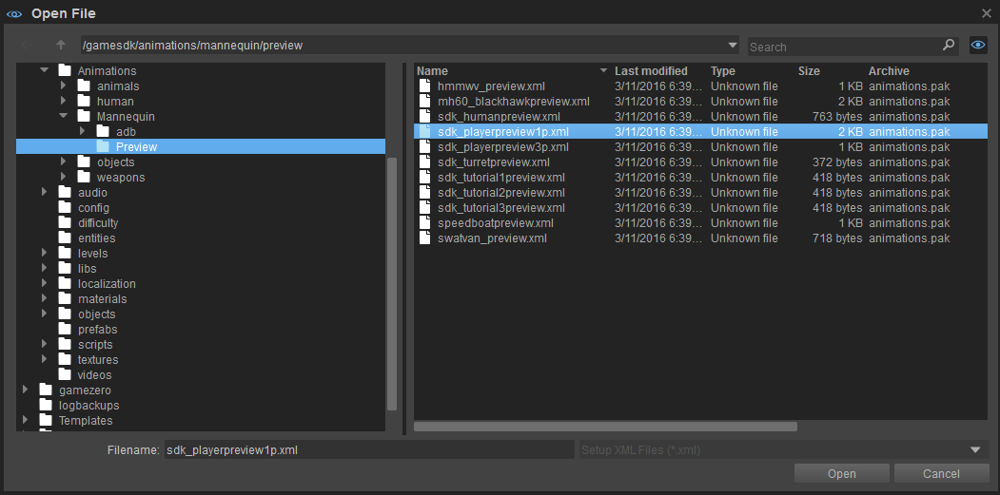
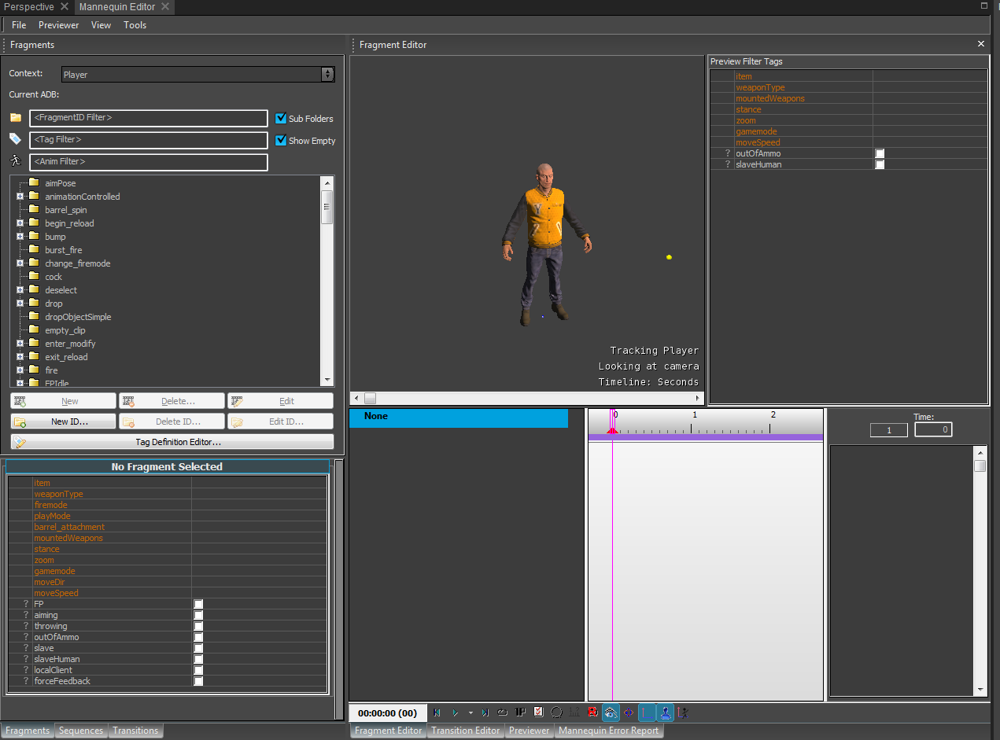
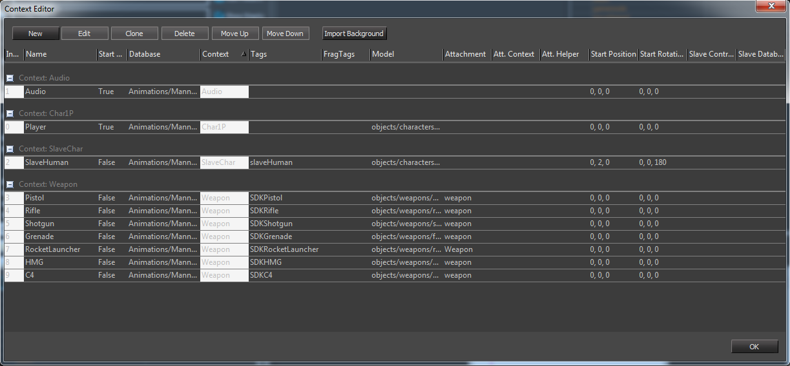
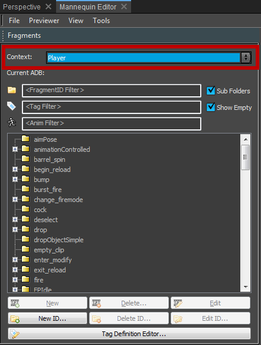
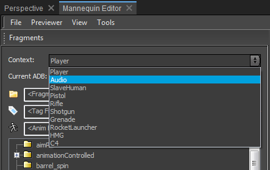
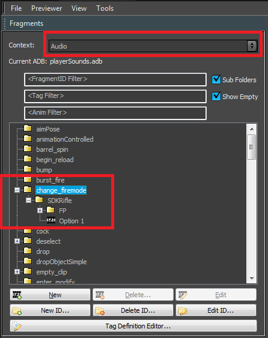
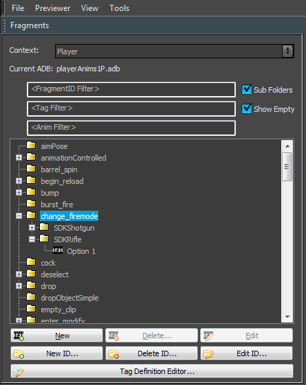
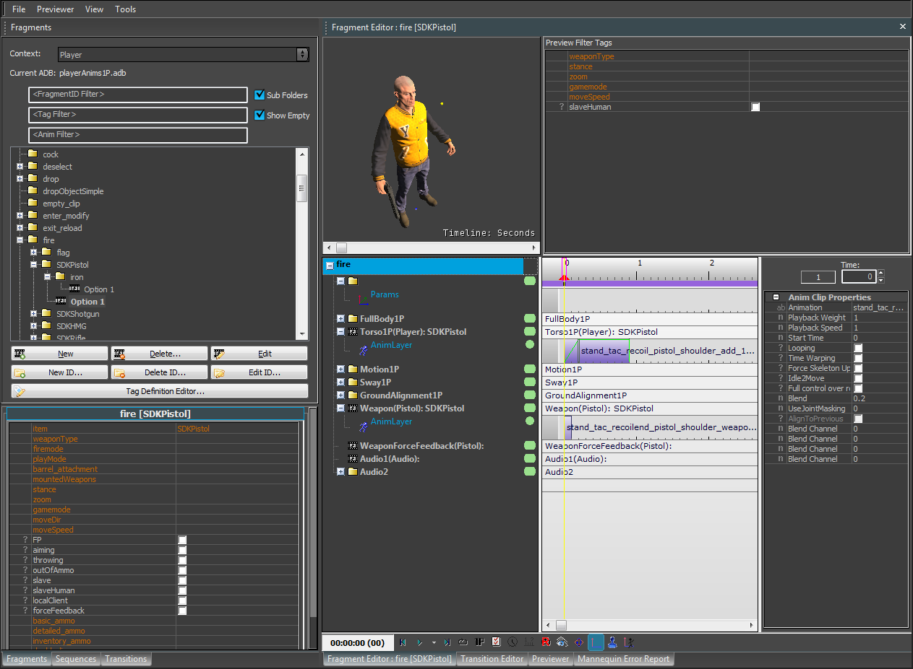
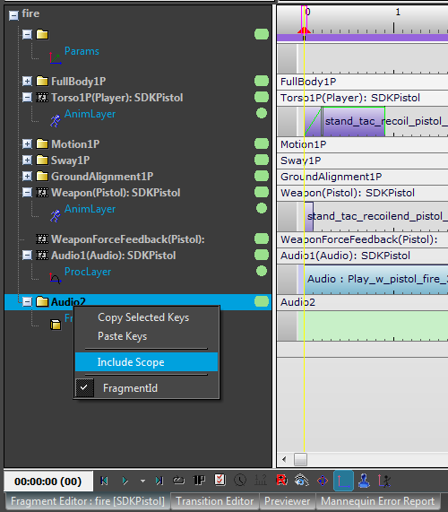
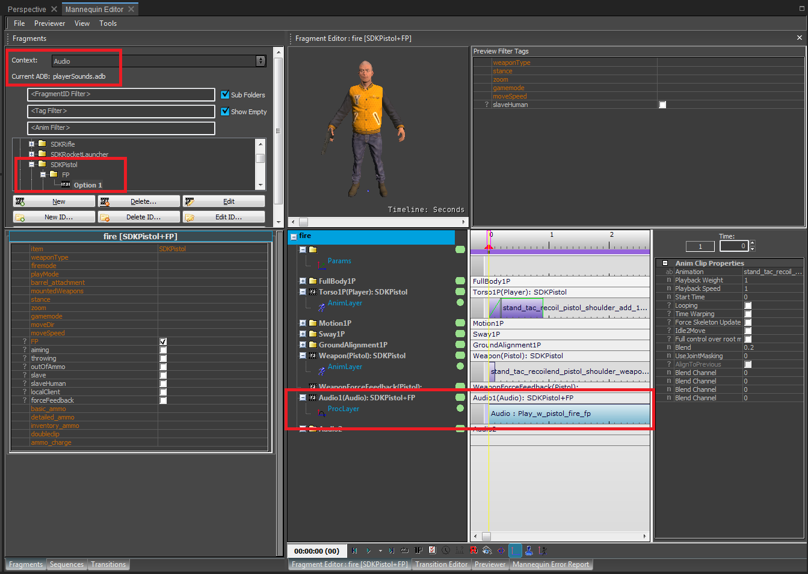

Overview
Introduction
Mannequin is a tool that can be setup in different ways, this caters for the differing demands of the individuals who are using it.
In this section an overview of the Sandbox Editor setup is given, this is based on the SDK_playerPreview1P.xml and where we explain why we have done certain things in a certain way.
First off a preview file needs to be loaded. An explanation as to how preview files are loaded can be found at Preview Setup File (xxxPreview.xml).
Inside Mannequin go to File -> Load Preview Setup. In the example below the first-person SDK example has been selected:

With the Preview setup loaded Mannequin should look like the example in the screenshot below:

When opening the Context Editor you can see the setups that are available for this Preview file.
The Context Editor can be found under File -> Context Editor.

In the example above it can be seen that there are several context setups: Player, Audio, Pistol, Rifle, Shotgun, Grenade, Rocketlauncher and HMG.
Each setup specifies a ScopeContext and the database and/or model that it uses in that ScopeContext when a setup becomes active.
- The "Player" context specifies that it will use the sdk player model and "playerAnims1P.adb" database on the "Char1P" ScopeContext.
- The "Audio" context specifies that it will use the "playerSounds.adb" database on the "Audio" ScopeContext.
- The "Rifle" context specifies that it will use a rifle model and "rifleWeaponAnims.adb" database on the "Weapon" ScopeContext.
- The "Pistol" context specifies that it will use a pistol model and "pistolWeaponAnims.adb" database on the "Weapon" ScopeContext.
Switching the Active Context in the Fragment Browser
What happens when you switch between Editor contexts in the Fragment Browser?
When selecting a context in the Fragments browser, the context setup becomes active i.e. the ScopeContext changes the associated model and database to the ones specified in the selected context and fills the list with all the Fragments contained in that database.
Hence, if you have the "Player" context enabled the Fragment Browser will display the Fragments in the "playerAnims1P.adb"

Now select the audio context:

This will populate the Fragment Browser with the Fragments from the "playerSounds.adb" database.
The file name of the database listed in the Fragments browser is shown next to the "Current ADB" label:

If you switch back to the Player context you will see all the Fragments (that are in the "playerAnims1P.adb" database) in the Fragment Browser.

Selecting a Fragment in the Fragment Browser: Important Details when Working with Multiple Scopes
What happens when you select one of the Fragments in the Fragment Browser for editing in the Fragment Editor? This process is a little involved so is best explained with an example.
Select the "fire+pistol" Fragment while in the Player Context (see below).
In this case the Editor first needs to figure out which Scopes are enabled for the "fire" FragmentID. For the case of "fire+pistol" the Scopes "Torso1P", "Weapon", "WeaponForceFeedback" and "Audio" are enabled.
Based on the FragmentID and tags combination of an entry in the Fragment Browser, Mannequin will try to place a Fragment on each of the Scopes that are enabled for this FragmentID.
Looking at the example below you will see that it has found Fragments for "Torso1P", "Weapon" and "Audio" and filled the Fragment Editor accordingly.
In the Fragment Editor you can see which Scopes have Fragments by looking at the icon next to the Scope name - it changes from a folder icon to a film reel icon.

The remainder of the active Scopes sharing a ScopeContext are hidden in the Editor. For this reason and depending on the Scope it might get hidden when you select "Include Scope" in the Fragment Editor.
Specific tag combinations can also have Scopes enabled that are different to the defaults of a FragmentID. This is achieved by including or removing Scopes in the Fragment Browser.

To find which Fragment goes into each Scope the different Scopes ask the database (that is assigned to them) for a Fragment that fulfills the request. In our example each Scope will try to find the best matching Fragment for "fire+pistol".
As defined in the Player Mannequin Tag Definition Editor file the "Torso1P" Scope uses the "Char1P" ScopeContext. In the Context Editor you can see that the "Char1P" ScopeContext is currently using the database specified by the "Player" context in the Editor, which is "playerAnims1P.adb". The "Torso1P" Scope will ask "playerAnims1P.adb" for the best Fragment with "fire+pistol". That Fragment is the one we double-clicked on in the Fragment Browser. It will be editable under the "Torso1P" Scope in the Fragment Editor.
The "Weapon" Scope uses the "Weapon" ScopeContext. The "Weapon" ScopeContext is currently using the database specified by the "Pistol" context in the Editor (because of the "pistol" tag in the Context Editor and the "pistol" tag in the query), which is "pistolWeaponAnims.adb". The "Weapon" Scope will ask "pistolWeaponAnims.adb" for the best Fragment with "fire+pistol". It finds a match with exactly those tags. This Fragment will be editable under the "Weapon" Scope in the Fragment Editor.
The "WeaponForceFeedback" Scope uses the "Weapon" ScopeContext. The "Weapon" ScopeContext is currently using the database specified by the "Pistol" context in the Editor (because of the "pistol" tag in the Context Editor and of the "pistol" tag in the query), which is "pistolWeaponAnims.adb". Notice how this is the same exact database as used by the "Weapon" Scope above, so carrying out the same query for "fire+pistol" would give the same exact Fragment as before. To avoid this, the "WeaponForceFeedback" Scope uses a Scope Tag called "forceFeedback" which is defined in the Player Controller Definitions as well. This alters the query to the database so that the Fragment MUST have the "forceFeedback" tag. Therefore, the "WeaponForceFeedback" Scope will ask "pistolWeaponAnims.adb" for the best Fragment with "fire+pistol+forceFeedback", with "forceFeedback" being a required tag. It finds no match fulfilling the query, so the Editor places an empty Fragment in the "ForceFeedback" Scope. If you start editing the empty Fragment a new Fragment with the tags "fire+pistol+forceFeedback" will automatically be created on the "pistolWeaponAnims.adb" database.
The "Audio1" Scope uses the "Audio" ScopeContext. The "Audio" ScopeContext is currently using the database specified by the "Audio" context in the Editor, which is "playerSounds.adb". The "Audio1" Scope will ask "playerSounds.adb" for the best Fragment with "fire+pistol". This Fragment will be editable under the "Audio1" Scope in the Fragment Editor.
Notice that even though only a single Fragment was selected, you are allowed to edit four at the same time. This is useful for synchronizing animations and sound, but can lead to some confusion.
It is important to understand the selection mechanism to get the most out of the Editor when using multiple Scopes and ScopeContexts.
Selecting a different context in the Fragment Browser allows you to see the Fragments contained in different databases.
When you select the "Audio" context you can see that you have many more specialized Fragments for Sounds like "FP" (first person) for "fire+pistol".
Try selecting one of these and going over the selection logic explained above for the specific cases. Notice how "Torso1P" still selects the same Fragment as before (since there is no better match) and "Audio1" displays the Fragment that was selected in the Fragment Browser.

Using Multiple Scopes for Audio
In the Sandbox Editor we are using two Scopes for the Audio setup, these are called "Audio1" and "Audio2" and we usually place audio clips exclusively on them. They are linked to the "Audio" ScopeContext (as can be seen in the controllerdef.xml file).
Any clips placed in either of these Scopes will be saved in "playerSounds.adb" with the current Editor setup for this particular preview file. We use two Scopes to allow different actions that are playing at the same time to play Sounds without 'stepping on each others' toes'.
An example could be when the rapid fire mode is used to fire a rifle in-game. The game will play the "rapid_fire" FragmentId every time the trigger is pressed and until the trigger is released.
You may also want to play an audio system Trigger each time a bullet is fired. In that scenario you would use the regular "fire" FragmentId so that each time a bullet is released/fired a sound is emitted. Also, since you would most likely want both audio system triggers to play at the same time, you need to make sure that you set the Scope masks for each FragmentId, and do this in such a way that they don't overlap.
If you used a single Scope one Fragment with Sounds, then that would cancel out the other resulting in the sounds not playing for both.
A FragmentId that takes over both Sound Scopes will remove any fragments playing on both of them.When you have a FragmentId that takes over both Audio Scopes it will show that you are only able to place clips on the Root Scope: Audio1 (Audio2 will be hidden). This is because they share ScopeContext. What this means is that they share the same database file.
The main consequence of this is that if both Scopes query the database with the same values it would always return the same exact Fragment.
Since we don't want to be playing the same duplicated Fragment in two layers at the same time, then you only place a Fragment on one of the Scopes if they share a ScopeContext (for the Scopes that are active for the FragmentId).